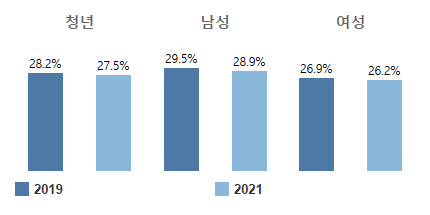
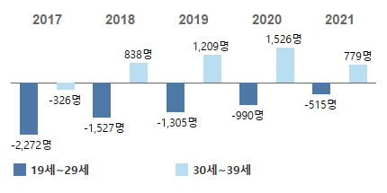
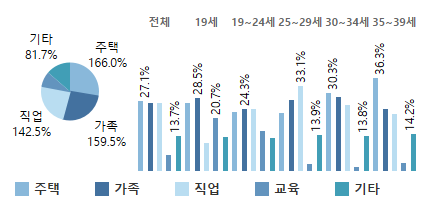

전주시 청년통계
전주시 청년통계에 대한 통계를 조회하고 다운로드 받으실 수 있습니다.
통계조회 및 다운로드 바로가기| 목적 | 사회·경제·개인적으로 중요한 시기인 청년층의 노동, 소득, 건강 등의 정책수립에 필요한 통계자료 확보 및 제공 |
| 조사시기 | 기준년도 12월 ~ 기준년도 익년 12월 |
| 조사주기 | 2년 |
| 조사내용 | 인구, 주택, 복지, 노동, 건강 5개 분야 |
| 조사대상 | 전주시에 주민등록되어있는 만 19~39세 인구 |
| 조사방법 | 전주시 및 관련부처 행정자료 수집 및 분석 |
주요 통계
- 인구
- 주택
- 복지
- 고용
- 건강
청년 인구 현황
-
연도별 청년인구
-
청년 인구 추이
청년 인구수, 비율 지속적으로 감소 중
-
-

성별 청년인구
-
성별 청년인구 비율
전체 남성 중 28.6%가 청년
전체 여성 중 26.2%가 청년
-
-
연령별 청년인구
-
성별 청년인구 비율
[19~24세] 54,513명(30.1%) 가장 많음
[25~29세] 여성 100명당 남성 113.6명으로 남성비율이 가장 큼
[30~34세] 38.183명(21.1%) 가장 적음
[35~39세] 성비 99.5 유일하게 여성이 남성보다 더 많음
성비 : 20대보다 30대에서 성비가 적음
전주시 전체 성비 : 96.9명(청년 107명)
-
혼인상태 및 출산
-

연령별 혼인상태 비율
-
결혼 초혼연령
-
20-39세 연령별 출산율
- 25세 이상 청년의 혼인율은 2년전보다 증가했지만 4년전에는 미치지 못하는 수준
- 초혼연령 : 15년전(`06년) 대비 남성 2.3세, 여성 2.8세 늦어짐
- 여성 1천명당 출생아수 [30~34세] 73.9명(`19년 84.2명), [35~39세] 36.4명(`19년 39.0명)
사망 및 순이동
-
연령대별 사망률
-
20~39세 사망률(인구 십만명 당)
[전체] 54.1명, [남성] 68.1명, [여성] 39.3명
남성이 28.8명 더 많음
-
-

연령대별 순이동자 수
-
순이동자 현황
최근 5년간 순이동자수(전입-전출) 증가
(`17 -2,598명 ~ `21 264명)
-
전입인구
-
연령대별 연간 전입인구
-
전입인구 및 비율 2년전 보다 증가
[2019] 42,550명(청년인구의 23.0%)
[2021] 43,722명(청년인구의 24.2%)
이 중 47% 전주시 외에서 전입 (20%:전주외전북, 12.7%:수도권)
-
-
전입 전 거주지
-

전입사유
-
전입사유
청년 전입사유의 80% 정도가 주택, 직업, 가족
주택은 30대에서 높고, 직업은 25~29세, 교육은 19세에서 높음
-
주택
-
주택 소유
-
청년 주택 소유 현황
최근 3년간 약 21,000명이 28,000호 정도 소유
최근 전주시 청년의 소유 주택수는 점점 줄고 있음
-
-
건축물 소유
-
청년 건축물 소유 현황
최근 3년간 약 2,100명이 3,300건 정도 건축물 소유
-
-
토지 소유
-
청년 토지 소유 현황
최근 3년간 약 3,700명이 5,900건 정도 토지 소유
최근 전주시 청년의 토지소유자 및 소유토지수는 점점 늘고 있음
-
복지
-
기초생활수급자 수
-
장애인 수
-
공적연금 가입현황
- 전주시 청년 181,010명 중 52.8%인 95,623명 공적연금 가입
- 국민연금 95,623명, 공무원연금 7,242명, 사학연금 2,280명
복지
-
청년 구직자 수
-
구직신청자 수
40,895명(청년 인구의 23.6%)
최종학력 [대졸] 55.8%, [고졸] 32.1%
-
-
청년 희망 급여
-
희망월급여
[200~250만원] 34.3%, [150~200만원] 27.6%, [250만원 이상] 24.6%
-
-
고용보험 피보험자
건강
-
국민건강보험 가입 형태(%)
-
2대 만성질환 진료건 수(명)
- 남성 : 1위 고혈압, 2위 당뇨
- 여성 : 1위 당뇨, 2위 고혈압
-
주요암 진료건 수(명)
인구·가구